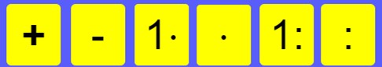

Der Rechen-Trainer funktioniert wie folgt:
Man bestimmt durch anklicken eines der Kästchen die Rechenart und durch die Eingabe einer Zahl im Kästchen daneben die Zahl bzw. den Zahlenraum.
Das heißt:
-
Kästchen 1 und 2: addieren / subtrahieren von Zahlen bis zur Höhe der eingegebenen Zahl
-
Kästchen 3 und 5:Das Multiplizieren der eingegebenen Zahl von 2 bis 10 bzw. das teilen von Zahlen bis zur eingegebenen Zahl durch Zahlen, die bei der Division keinen Rest ergeben.
-
Kästchen 4 und 6:Das Multiplizieren bzw. Dividieren von Zahlen bis zur eingegebenen Zahl, wobei bei der Division kein Rest entsteht.
Danach drücke bitte den "Start"-Knopf links und los geht es. Nach Eingabe Deiner Lösung durch anklicken der entsprechenden Zahlentaste und Bestätigung durch den "Haken"-Knopf, geht es nach 2 Sekunden weiter. Dir werden 18 Aufgaben aus dem gewünschten Zahlenraum gestellt.